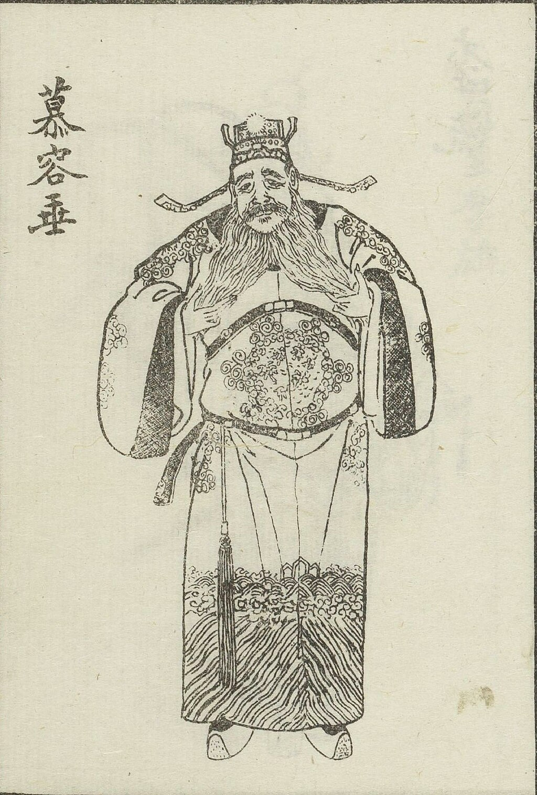

|
Daoming Murong (慕容道明)
|
 |
Chengwu Emperor
Great Yan Kingdom
China
Email: daomingmr6@yan.com
|
Bio
I am Daoming Murong (慕容道明), also known as Daoye Murong (慕容道业), Shuren Murong (慕容叔仁), Emperor Chengwu of the Great Yan (大燕成武皇帝). Born into the noble Murong clan of the Xianbei (鲜卑) people, I have dedicated my life to the unification and prosperity of our fractured lands during the tumultuous period of the Sixteen Kingdoms. As a seasoned general and strategist, I have led armies to numerous victories, overcoming great adversity. After serving under Former Yan and witnessing its decline, I established the New Yan Kingdom to restore order and stability.
Brief Recruitment Proclamation
I, Daoming Murong, Emperor of the Great Yan, call upon all valiant men of our realm. In these troubled times, our nation needs brave warriors to restore peace and prosperity.
If you are 18 or older, strong and loyal, join our army. Serve your country, and you will be rewarded. Together, we will reclaim our land and secure a bright future for all. Please send me your resume via email.
Publications
Services
[386-396], Emperor, Great Yan Kingdom
[370-383], Guanjun General, Qin Kingdom
[357-370], Wu King, Former Yan Kingdom
News
[396], We have avenged our fallen and defeated Gui Tuoba (拓跋) and Qian Tuoba (拓跋虔)! Thanks to the entire team!
[395], It is with great sorrow that I share this news: in the war against the Wei Kingdom, fifty thousand of our soldiers were buried alive in Can He Bei (参合陂).
[394], Defeated and captured the fake emperor Yong Murong (慕容永)!
[392], Defeated and destroyed the Di Wei (翟魏) Kingdom! Immense thanks to my collaborators!
[386], I have reestablished the Great Yan Kingdom! If you're interested, come and join us!
[385], Defeated Laozhi Liu (刘牢之) at Wu Qiao Ze (五桥泽), thanks to the entire team!
[370], I am deeply saddened to announce that I have just lost my son, Ling Murong (慕容令).
[369], I am about to join the Qin Kingdom as the Guanjun General! Many thanks to Emperor Jian Fu (苻坚)!
[369], Defeated the Northern Expedition army of Jin Kingdom led by Huan Wen (桓温)! Thanks to my team, especially my younger brother De Murong (慕容德).
[357], I am thrilled to announce that I am about to be bestowed the title of Wu King. My heartfelt thanks to my elder brother, Jun Murong (慕容儁)!
[352], Congratulations to my elder brother Ke Murong (慕容恪) for defeating Ran Min (冉闵)!!
[337], I am thrilled to announce the founding of the Great Yan Kingdom! If you wish to join, please contact my father, Huang Murong (慕容皝).
|